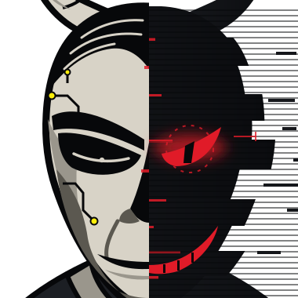

Tonight's game: The Core
The city belongs to Z.
Your phone, your car, your groceries work only while your subscription does. The city's old name expired with its licence.
You live outside it.
A Nomad. One of the unlogged.
No Z-ID, an old van without a network, and one stolen thing in the back: an atomic charge without its ignition rods.
Tonight you and four friends are inside the tower.
Raven waits in the van, on the radio. Three floors down runs The Core: every algorithm Z owns, in one room.
Sixty minutes.
Three floors of locks.
A phone that opens with a gesture. A locker that wants the guard's shift. A gate, a lab, a firewall made of light. Then the charge.
Step out of the story for a second
It is a game, of course.
An escape room.
A real place you book for an evening. The tower is plywood and steel, the locks are real, the clock on the wall counts down from sixty, and five friends would rather not be beaten by a locker.
Every escape room has someone behind the wall.
The game master. A person watching the cameras, counting the minutes, deciding when a team has struggled long enough to deserve a hint. One person, one room, every single game.
Tonight nobody sits behind the wall.
You think you are alone.
You are wrong.
Someone is taking notes.
cue lamp over the ad screen · 9 s
A light comes on over the clue.
He doesn't say a word.
twist blackout · the team is five minutes ahead of plan
You were ahead of schedule.
He noticed.
say ZETA → "You are doing so well. Statistically, you give up in minute seventeen."
Every voice in the room is his.
None of them is his own.
He has been taking notes on you, too.
This page only watched how you scroll. In a real room he has every sensor, every camera and every wrong answer.

ShadowmanThe AI game master for physical escape rooms.
What you just watched was a simulation
He is built for the real thing.
Shadowman is software for people who own and build physical escape rooms. He takes the game master's chair: he sits in your venue's network, watches the team through your sensors and cameras, and runs the locks, the lights and the voices for the whole hour. You never see him. You see what he does.
Watch him run the simulated roomWire your room.
He does the rest.
He senses
- Door contacts, buttons, keypads
- RFID readers and weight plates
- Light, motion and temperature sensors
- Cameras: QR codes, where each player stands

He moves
- Maglocks, relays, solenoids
- Lamps, LED strips, blackout
- Screens and what they show
- Speakers: every character's voice
Tasmota · ESPHome · Zigbee2MQTT · RTSP cameras · anything that speaks MQTT. You describe the room in a plain document; he reads it and runs it. The simulated room above talks to him over the same bus as real devices: unplug it, plug in yours.
He never looks away.
He never plays the same game twice.
He watches
Every sensor, every wrong attempt, where each player stands and how long they have been stuck.
He helps quietly
First a lamp over the clue. Then a nudge in a character's voice. A hand on the lock only as a last resort.
He raises the stakes
A team that is too fast gets a blackout, a patrol or a door that locks again.
No two games alike
Before the first clue is read, he redraws the puzzles for this team: solution and clue together.
You read his notes
Every decision arrives with one cold line of why. Your operator watches him think.
The exits are not his.
Everything else is.
In a real building some things must never depend on an AI. Doors, alarms and emergency systems live in a separate safety layer with its own audit log. He cannot reach it, and he never pretends he can.
Your room.
His game.
Shadowman, the AI game master for physical escape rooms.